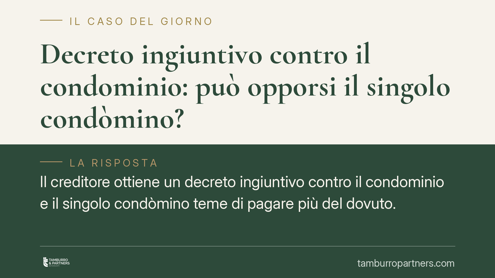

Decreto ingiuntivo contro il condominio: può opporsi il singolo condòmino?
Il creditore ottiene un decreto ingiuntivo contro il condominio e il singolo condòmino teme di pagare più del dovuto. Chi può opporsi all'ingiunzione e in quale fase? La risposta distingue tra la difesa dell'ente, affidata all'amministratore, e gli strumenti riservati al condòmino nella fase esecutiva, dove la quota millesimale e la preventiva escussione dei morosi diventano decisive.

Il caso
Un professionista o un fornitore vanta un credito verso il condominio per attività di gestione dei beni comuni. Ottiene un decreto ingiuntivo (il provvedimento con cui il giudice ordina il pagamento di una somma su ricorso del creditore) notificato al condominio in persona dell'amministratore. Il singolo condòmino, preoccupato di essere chiamato a rispondere dell'intero importo, si chiede se possa opporsi personalmente.
La questione tocca due piani distinti: chi rappresenta il condominio nel giudizio di opposizione e come il singolo può difendersi quando il creditore agisce in via esecutiva.
Inquadramento normativo
L'art. 1131 c.c. attribuisce all'amministratore la rappresentanza dei partecipanti, con legittimazione attiva e passiva nelle controversie relative alle obbligazioni assunte nell'interesse comune. Per questa ragione, l'opposizione al decreto ingiuntivo emesso contro il condominio per debiti di gestione spetta, di norma, all'amministratore quale rappresentante dell'ente.
La regola non è però assoluta. Va distinto il tipo di controversia. Quando si discute di obbligazioni dell'ente di gestione opera la rappresentanza dell'amministratore. Quando invece il contenzioso incide su diritti reali o sui beni comuni, la giurisprudenza riconosce in diversi casi una legittimazione concorrente del singolo condòmino a tutelare la propria posizione. L'orientamento più recente della Cassazione tende a circoscrivere la difesa individuale del condòmino nei giudizi relativi a debiti di gestione, ma la soluzione dipende dalla natura della pretesa.
Il secondo caposaldo è l'art. 63 disp. att. c.c. In base alle Sezioni Unite (Cass. SU n. 9148/2008), le obbligazioni condominiali sono parziarie: ciascun condòmino risponde in proporzione alla propria quota millesimale, non dell'intero. Inoltre il creditore munito di titolo esecutivo contro il condominio deve prima escutere i condomini morosi; può rivolgersi ai condomini in regola solo in via sussidiaria (il cosiddetto *beneficium excussionis*, cioè il beneficio della preventiva escussione).
Implicazioni pratiche
Per il singolo condòmino ciò significa che l'opposizione al decreto ingiuntivo, nel merito, è terreno dell'amministratore. Impugnare personalmente l'ingiunzione per debiti di gestione espone, nella maggior parte dei casi, a una pronuncia di difetto di legittimazione.
La difesa individuale si colloca in un momento successivo: quando il creditore, ottenuto il titolo, notifica il precetto o avvia l'esecuzione forzata contro il singolo. Qui il condòmino dispone di strumenti concreti. Può contestare l'importo preteso quando eccede la propria quota millesimale, perché risponde in misura parziaria. Può eccepire che il creditore non ha prima escusso i condomini morosi, come impone l'art. 63 disp. att. c.c. Lo strumento tecnico è l'opposizione all'esecuzione ex art. 615 c.p.c., con cui si contesta il diritto del creditore di procedere esecutivamente in quelle forme e in quella misura.
Resta distinto il tema della preoccupazione comune: pagare per intero un debito condominiale. La parziarietà dell'obbligazione tutela il condòmino in regola, ma va fatta valere tempestivamente e con gli atti giusti.
Il rimedio tardivo
Se il decreto ingiuntivo è stato notificato irregolarmente e il condominio non ha potuto opporsi nei termini, l'art. 650 c.p.c. consente l'opposizione tardiva. Presupposti: l'ingiunto deve provare di non aver avuto tempestiva conoscenza del decreto per irregolarità della notifica, caso fortuito o forza maggiore. L'opposizione va proposta entro dieci giorni dal primo atto di esecuzione. Anche qui la legittimazione segue le regole viste: per i debiti dell'ente il rimedio spetta all'amministratore.
Cosa fare in concreto
- Verifica a chi è stato notificato il decreto: se è intestato al condominio, sollecita l'amministratore a valutare l'opposizione nei termini.
- Richiedi all'amministratore copia del riparto e la situazione dei condomini morosi: serve per quantificare la tua quota e per eccepire la preventiva escussione.
- Controlla il precetto: se ti viene chiesto più della tua quota millesimale, predisponi l'opposizione all'esecuzione ex art. 615 c.p.c.
- Agisci sui termini: l'opposizione all'esecuzione e quella tardiva hanno scadenze brevi e decadenze rigorose.
- Rivolgiti a un legale prima di pagare o di lasciar decorrere i termini, per individuare lo strumento corretto in base alla natura della pretesa.
Chiarire su quale piano ci si muove, merito o esecuzione, evita difese inefficaci.
Ogni condominio ha una storia a sé.
Se gestisci un'amministrazione e vuoi un confronto su una specifica questione condominiale, scrivi allo studio. Ti rispondiamo entro un giorno lavorativo.